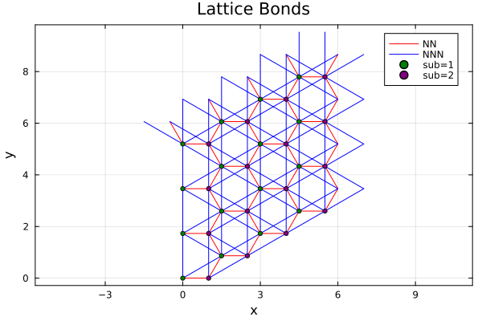

Example: Plot a Lattice and Bonds
This example demonstrates how to visualize a lattice and its bonds using Plots.jl. The script builds a honeycomb lattice, draws NN/NNN bonds, and colors the two sublattices in different colors.
Code
"""
Simple lattice visualization example (optional Plots.jl).
This script draws a honeycomb lattice and its NN/NNN bonds,
and colors sublattice sites differently.
Output:
- lattice_bonds.png (saved next to this script)
Run:
julia --project=examples examples/Plot_Lattice/plot_lattice.jl
"""
using MeanFieldTheories
using Plots
# Lattice vectors
const a1 = [0.0, sqrt(3.0)]
const a2 = [1.5, sqrt(3.0)/2]
# Unit cell: A at origin, B at (1, 0)
unitcell = Lattice(
[Dof(:cell, 1), Dof(:sub, 2, [:A, :B])],
[QN(cell=1, sub=1), QN(cell=1, sub=2)],
[[0.0, 0.0], [1.0, 0.0]];
vectors=[a1, a2]
)
# Tile a finite lattice (periodic in both directions)
lattice = Lattice(unitcell, (4, 4))
# Build bonds
nn_bonds = bonds(lattice, (:p, :p), 1)
nnn_bonds = bonds(lattice, (:p, :p), 2)
# Plot helper
function plot_bonds!(p, bond_list; color=:black, label="")
xs = Float64[]
ys = Float64[]
for b in bond_list
length(b.coordinates) < 2 && continue
push!(xs, b.coordinates[1][1]); push!(ys, b.coordinates[1][2])
push!(xs, b.coordinates[2][1]); push!(ys, b.coordinates[2][2])
push!(xs, NaN); push!(ys, NaN)
end
plot!(p, xs, ys; seriestype=:path, color=color, label=label)
end
# Plot
p = plot(; aspect_ratio=:equal, legend=:topright, framestyle=:box,
xlabel="x", ylabel="y", title="Lattice Bonds")
plot_bonds!(p, nn_bonds; color=:red, label="NN")
plot_bonds!(p, nnn_bonds; color=:blue, label="NNN")
# Draw sites on top (two sublattices: sub=1 green, sub=2 purple)
idx1 = findall(qn -> qn[:sub] == 1, lattice.position_states)
idx2 = findall(qn -> qn[:sub] == 2, lattice.position_states)
xs1 = [lattice.coordinates[i][1] for i in idx1]
ys1 = [lattice.coordinates[i][2] for i in idx1]
xs2 = [lattice.coordinates[i][1] for i in idx2]
ys2 = [lattice.coordinates[i][2] for i in idx2]
scatter!(p, xs1, ys1; color=:green, markersize=3, label="sub=1")
scatter!(p, xs2, ys2; color=:purple, markersize=3, label="sub=2")
outpath = joinpath(@__DIR__, "lattice_bonds.png")
savefig(p, outpath)
println("Saved ", outpath)Output
The figure is shown below (the image is stored under docs/src/fig/):
